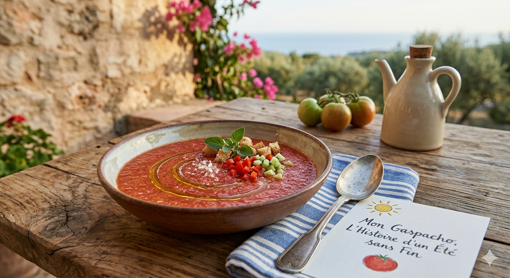

Contrairement aux idées reçues, le gaspacho est né bien avant la tomate ! À l'origine, c'était le plat de survie des soldats romains et des paysans andalous. Ils écrasaient dans un mortier du pain rassis, de l'ail, de l'huile d'olive et du vinaigre avec un peu d'eau pour s'hydrater sous le soleil de plomb.
Il a fallu attendre le XVIe siècle et le retour des explorateurs des Amériques pour que la tomate et le poivron fassent leur entrée dans la recette et lui donnent sa célèbre couleur rouge. C’est un plat de patience qui célèbre la rencontre entre l'Ancien et le Nouveau Monde.